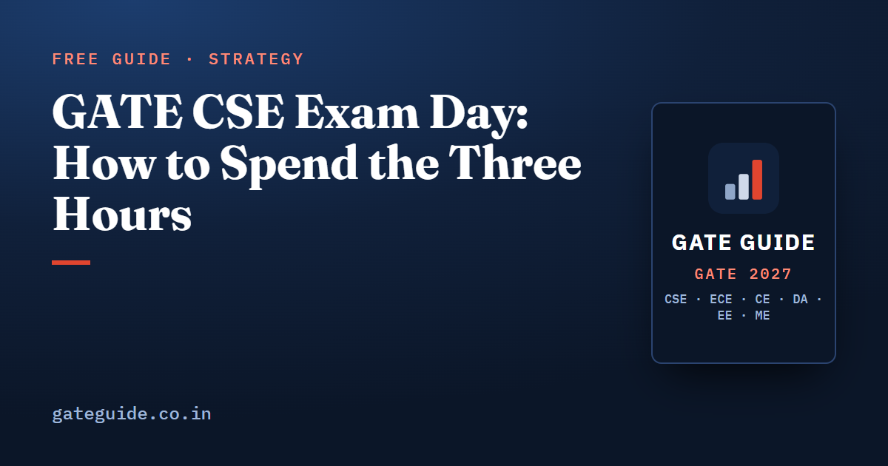

GATE CSE Exam Day: How to Spend the Three Hours

Three hours, 65 questions, 100 marks. Almost every candidate who finishes the GATE CSE paper badly knows enough to have finished it well; what went wrong was the clock. This guide sets out an attempt order, a per-question budget, a rule for when to skip, what the second pass is for and the arithmetic that decides when a guess is worth making.
In this guide
Key takeaways
- General Aptitude first, in 15 to 18 minutes. It is 15 marks and rated easy every year.
- Budget 1.5 minutes for a one-mark question and 3 minutes for a two-mark question.
- Decide to skip within 60 to 90 seconds. The early skip is what creates the time for the second pass.
- Numerical-answer and multiple-select questions carry no negative marking, so none of them should be left blank at the end.
- A blind guess on a multiple-choice question is worth exactly zero. Guess only when you can eliminate an option.
What the three hours has to cover
The official pattern for the CS paper is 65 questions and 100 marks in 3 hours as a computer-based test: 10 General Aptitude questions worth 15 marks, about 13 marks of Engineering Mathematics and about 72 marks of core subjects. The paper mixes one-mark and two-mark questions, and three formats: multiple choice with one correct option, multiple select with one or more correct options and no partial credit, and numerical answer typed on a virtual keypad. Negative marking applies to multiple choice only: of a mark for a wrong one-mark answer and for a wrong two-mark answer. Confirm all of this at gate2027.iitm.ac.in and read the full breakdown in the GATE CSE 2027 exam pattern and marking scheme.
The arithmetic of the budget: 15 minutes for aptitude, plus 25 technical one-mark questions at 1.5 minutes, plus 30 technical two-mark questions at 3 minutes, comes to about 142 minutes if every question takes its full allowance:
That leaves nearly 40 minutes of slack, and the slack is the whole plan. It exists only because you spend far less than the budget on the questions you recognise and almost nothing on the ones you skip.
The four blocks
| Block | Time | What happens |
|---|---|---|
| General Aptitude | 15–18 minutes | All 10 questions, in order, nothing deferred except a stubborn two-mark item |
| Technical first pass | about 100 minutes | Questions 11 to 65 in order; answer what has a plan, mark and leave the rest |
| Second pass | about 50 minutes | Marked questions, in order of marks per minute |
| Final sweep | 10–15 minutes | Every blank numerical and multiple-select question gets an answer |
Block one: aptitude, 15 to 18 minutes
Take the recognition items first: grammar, vocabulary, a defined operation, a series. Then the quantitative word problems, worked on paper rather than in your head. Sketch the fold or the rotation for a spatial item instead of visualising it. For data interpretation, compute every quantity a statement needs before judging any statement. Reading comprehension and sentence rearrangement go last. Any two-mark aptitude item without a plan after 90 seconds is marked for review and left.
Block two: the technical first pass, about 100 minutes
Go through the technical questions in order. Do not hunt for your favourite subject first; the scanning costs more than the ordering saves, and a question you skipped once is easier to return to than one you never read.
Answer anything with a clear plan. If you do not have one within 60 to 90 seconds, mark it and move. That is the single decision that determines whether you finish. Spending more than five minutes on one question in the first pass is the most common reason a paper is left incomplete.
Long executions are the exception worth naming. A scheduling timeline, a cache trace, a congestion-window table or a graph algorithm run on a small instance are all worth doing in the first pass. The same templates on a large instance are deferred: they are reliable marks, but they are expensive, and they will still be there in the second pass.
Block three: the second pass, about 50 minutes
Return to the marked questions in order of expected marks per minute, not in paper order.
- Two-mark numerical-answer and multiple-select questions first. They carry no penalty, so an attempt cannot cost you anything.
- Two-mark multiple-choice questions where at least one option can be ruled out.
- One-mark leftovers.
Do not revisit a question you have already answered unless you have spotted a definite error. Under time pressure, second-guessing converts more right answers into wrong ones than the reverse.
Block four: the final sweep, 10 to 15 minutes
Fill in every blank numerical-answer and multiple-select question. There is nothing to lose and the occasional mark to gain. Leave a multiple-choice question blank only if you can eliminate nothing. Finish by checking that all 65 questions have been either answered or consciously skipped.
The guessing arithmetic
For a multiple-choice question, the expected value of a guess is the probability your option is right times the marks, minus the probability it is wrong times the penalty:
| Options eliminated | Expected value, 1-mark question | Expected value, 2-mark question |
|---|---|---|
| None | 0 | 0 |
| One | about +0.11 | about +0.22 |
| Two | about +0.33 | about +0.67 |
The rule that follows is short: never guess blind, guess when one option is certainly wrong, guess freely when two are.
Multiple-select questions work differently. There is no penalty, so always attempt them, but there is no partial credit either, so treat the four options as four independent true-or-false decisions and select only what you can justify. One over-selection loses the question as completely as one omission. Remember that all four options may be correct and that at least one always is. The format-by-format detail is in the MCQ, MSQ and NAT strategy guide.
For numerical answers, read the rounding instruction and follow it exactly. An integer needs no decimal point, a negative answer needs its sign, and units, commas and fractions are never typed. Where the question fixes a convention for kilobytes or megabits per second, use the question's convention. Checking the unit before entering the value is the cheapest habit in the paper; unit slips are the largest single source of lost numerical marks. An on-screen scientific calculator is provided, and being slow with it costs minutes, so practise it in advance using the virtual calculator guide.
When the question looks unfamiliar
Recent papers have asked familiar concepts in unfamiliar settings: a dynamic programming recurrence with an extra constraint, a graph algorithm with a modified rule, a scheduling policy with a twist. The procedure is fixed. Read the definition twice and write it down in one line. Map it to the nearest concept you know, but do not assume the textbook version still applies. Test the definition on the smallest instance you can. For a modified algorithm, run the modified rule on the given data rather than recalling what the standard algorithm does. If the mapping is still unclear after 90 seconds, mark it and move on; these are often two-mark numerical questions you can return to without penalty.
Habits that protect marks
Write every trace, timeline, map and graph on the rough sheet. Nothing in this paper is meant to be held in your head. In a two-shift year the scores are normalised across shifts, so a rumour about the other shift's difficulty is not information and should change nothing about how you attempt yours. Keep your watch of the clock to fixed checkpoints, such as the 20-minute, 60-minute and 120-minute marks, rather than glancing at it every few questions.
Practise the plan, not just the syllabus
This plan is a skill, and it fails the first two or three times you use it. Take each full mock in one 180-minute sitting at the clock time of your real slot, score it with the official scheme, and in the analysis count the slow questions alongside the wrong ones. If your first pass keeps ending at 130 minutes, the fix is skip discipline, not more revision. The mock test strategy guide covers how to analyse a test afterwards, and the GATE CSE 2027 book includes ten full-length papers built to the recent question-type mix so that the timing plan can be rehearsed on realistic papers.
Two days before, confirm your reporting time, documents and centre route with the admit card and exam day rules, and sleep on the schedule your slot demands. The plan above only works on a rested clock.
Frequently asked questions
In what order should I attempt the GATE CSE paper?
General Aptitude first in about 15 to 18 minutes, then the technical questions in order in a single first pass of roughly 100 minutes, skipping anything without a plan within 60 to 90 seconds. Spend about 50 minutes on a second pass over the marked questions, and the last 10 to 15 minutes on guesses that carry no penalty.
How much time should I give each GATE question?
About 1.5 minutes for a one-mark question and 3 minutes for a two-mark question. At those budgets the full paper takes roughly 142 minutes, which leaves nearly 40 minutes of slack. The slack only exists if you skip early, so make the skip decision inside the first 60 to 90 seconds, not after five minutes.
Should I guess in GATE if I am not sure?
For numerical answer and multiple select questions, always, because neither carries negative marking. For multiple choice, guessing blind has an expected value of exactly zero. Guess when you can rule out at least one option, and guess freely when you can rule out two. Leave a multiple choice question blank if you can eliminate nothing.
Is there negative marking in GATE 2027 for CSE?
Negative marking applies only to multiple choice questions, at one third of a mark for a wrong one-mark answer and two thirds for a wrong two-mark answer. Multiple select and numerical answer questions carry no negative marking, but multiple select gives no partial credit either. Confirm the current scheme at gate2027.iitm.ac.in.
What is the biggest time-waster in the GATE CSE paper?
Staying with a question you have already decided is hard. Spending more than five minutes on one item in the first pass is the most common reason a paper is left unfinished. The second most common is re-checking questions you already answered, which under time pressure changes more right answers to wrong than the other way round.
How do I practise this plan before the exam?
Use full mock tests. Take each one in a single 180-minute sitting at the clock time of your real slot, score it with the official marking scheme, and afterwards count not only wrong answers but slow ones. If your first pass does not end near the 100-minute mark, the problem is your skip discipline, not your syllabus.
Sources
- GATE 2027 official website (IIT Madras)
- GATE 2027 question paper pattern (official)
- GATE 2027 CS syllabus (official PDF)
Dates, fees and the syllabus are set by the GATE 2027 organising institute and can change. Always confirm at gate2027.iitm.ac.in.